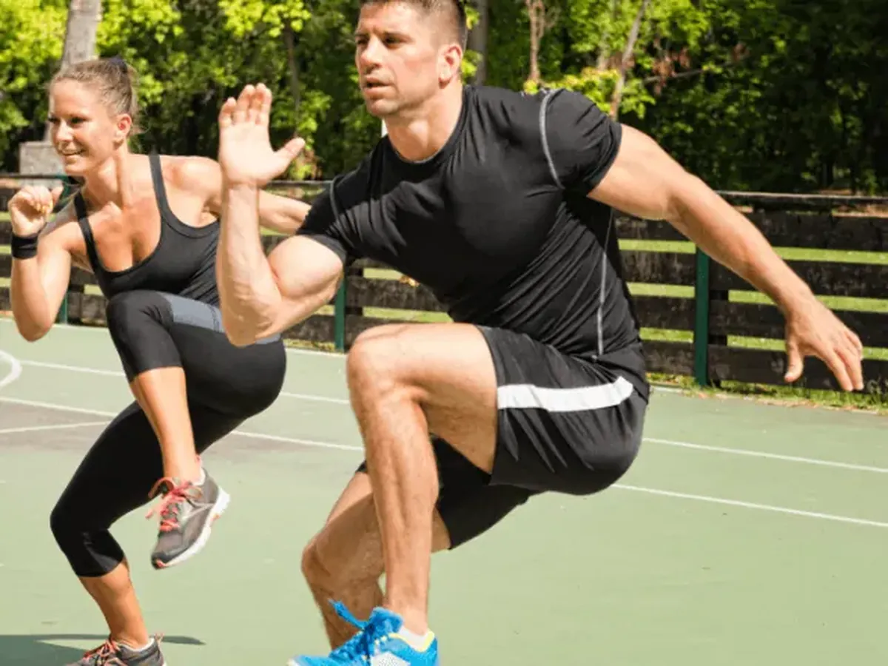

Sportvereniging in Nijmegen: welke club per sport?
Bijgewerkt op 24 november 2026.
Een sportschool is handig, maar bij een vereniging sport je samen, speel je wedstrijden en drink je na afloop wat in de kantine. Nijmegen heeft meer dan honderd sportclubs. Wij zetten de bekendste per sport op een rij, met waar je kunt proeftrainen.

Zo hebben we gekozen
We lazen in november 2026 de websites van de sportverenigingen in onze bedrijvengids. Bijna elke club laat je eerst een paar keer gratis meetrainen. Vraag dat altijd even na voordat je lid wordt.
Voetbal
SV Orion: de grootste amateurclub van Nijmegen
SV Orion aan de Nijmeegsebaan is de grootste amateurvoetbalvereniging van Nijmegen. De club heeft een sterke jeugdopleiding met selecties op hoog niveau, maar is er net zo goed voor wie gewoon voor de lol wil voetballen.
Goed voor: jeugdspelers met ambitie, en iedereen die bij een grote club wil.
Kolping-Dynamo: senioren op zaterdag, zondag en vrijdag
Kolping-Dynamo ontstond in 1996 uit een fusie van FC Kolping en VV Dynamo. De club heeft seniorenteams op zaterdag, zondag en vrijdag, handig als je in het weekend niet altijd kunt.
Goed voor: volwassenen die (weer) willen voetballen.
Andere voetbalclubs: SV Blauw-Wit, VV Trekvogels, VV OSC, DVE-Trajanus, S.V. Nijmegen, Brakkenstein en omnivereniging Quick 1888.
Hockey
NMHC: 120 jaar hockey
NMHC aan de d'Almarasweg vierde in 2026 het 120-jarig bestaan. Bij vorst gaan de trainingen in de blaashal gewoon door.
Goed voor: wie bij een grote, oude club wil spelen.
HCQZ: drie keer gratis proeftrainen
Bij HCQZ aan de Staddijk kun je drie keer gratis proeftrainen. Je krijgt een leenstick, zelf neem je sportkleding, scheenbeschermers en een bitje mee.
Goed voor: wie hockey eerst rustig wil uitproberen.
Atletiek en hardlopen
Nijmegen Atletiek
Nijmegen Atletiek traint op de baan aan de Heemraadstraat, met een eigen clubhuis. Je kunt je aanmelden voor een proeftraining.
Goed voor: sprinten, springen, werpen en hardlopen in clubverband.
Voor hardlopers: Team Zevenheuvelen begeleidt hardlooptalent, onder meer Susan Krumins liep er. Elke zaterdag is er ook de gratis Goffert parkrun.
Zaalsporten
VoCASA: volleybal voor iedereen
VoCASA werd opgericht in 1988 en heeft meer dan 500 leden. De eerste heren- en damesteams spelen in de Superdivisie, maar er zijn ook jeugdteams en recreanten.
Goed voor: volleybal op elk niveau.
Ook volleybal: Pegasus, sinds 1998. Voor basketbal ga je naar Wildcats, waar je drie trainingen gratis meedoet, of Nimma Gemina.
Badmintonclub DETO: van 6 tot 85 jaar
Bij DETO speel je recreatief of in competitie. Er zijn groepen voor junioren, senioren en 50-plussers: het jongste lid is 6, het oudste actieve lid 85.
Goed voor: badminton op je eigen niveau.
In Lent speel je badminton bij 't Pluumke (sinds 1979). Tafeltennis kan bij Tafeltennis Nijmegen, met een eigen zaal en een regionaal trainingscentrum, of bij DVS in Lindenholt.
Korfbal, rugby en meer
KV Noviomagum: korfbal sinds 1911
Korfbal speel je samen, jongens en meisjes, mannen en vrouwen. Bij Noviomagum kan dat vanaf 3 jaar, zonder ervaring. Je wedstrijdshirt krijg je in bruikleen en je kunt een proeftraining aanvragen.
Goed voor: een gemengde teamsport voor het hele gezin.
The Wasps: rugby sinds 1971
Sinds 1971 speel je rugby bij The Wasps, op twee velden midden in Nijmegen. Is contact niets voor jou, dan zijn er ook touch rugby en walking rugby. De jongste jeugd traint op woensdag en vrijdag.
Goed voor: wie eens een ovale bal wil proberen.
- Tennis: TV Rapiditas, Tachys, LLTV in Lent en TV Lentseveld, dat in 2026 verhuisde naar twee nieuwe smashcourtbanen aan de Dijkstraat.
- Roeien: RV de Waal op de Spiegelwaal.
- Honkbal en softbal: De Hazenkamp.
- Waterpolo: Aqua-Novio '94.
- Beachvolleybal en beachtennis, het hele jaar binnen: Beachfabriek.
- IJshockey: Nijmegen Knights.
- Bridge leren: Bridgeles Nijmegen.
Liever op je eigen tijd sporten? Kijk dan bij de beste sportscholen, padel of vechtsport.
Veelgestelde vragen
Wat is de grootste voetbalclub van Nijmegen?
SV Orion aan de Nijmeegsebaan noemt zich de grootste amateurvoetbalvereniging van Nijmegen.
Kan ik gratis proeftrainen bij een sportclub in Nijmegen?
Bij de meeste clubs wel. Bij HCQZ en basketbalclub Wildcats mag je drie keer gratis meedoen. Korfbalclub Noviomagum en Nijmegen Atletiek hebben proeftrainingen.
Waar kan ik hockeyen in Nijmegen?
Bij NMHC aan de d'Almarasweg en HCQZ aan de Staddijk.
Welke sportclub is er voor volwassenen zonder ervaring?
Korfbal bij Noviomagum, walking rugby bij The Wasps en recreatief badminton bij DETO zijn goede opties om te beginnen.